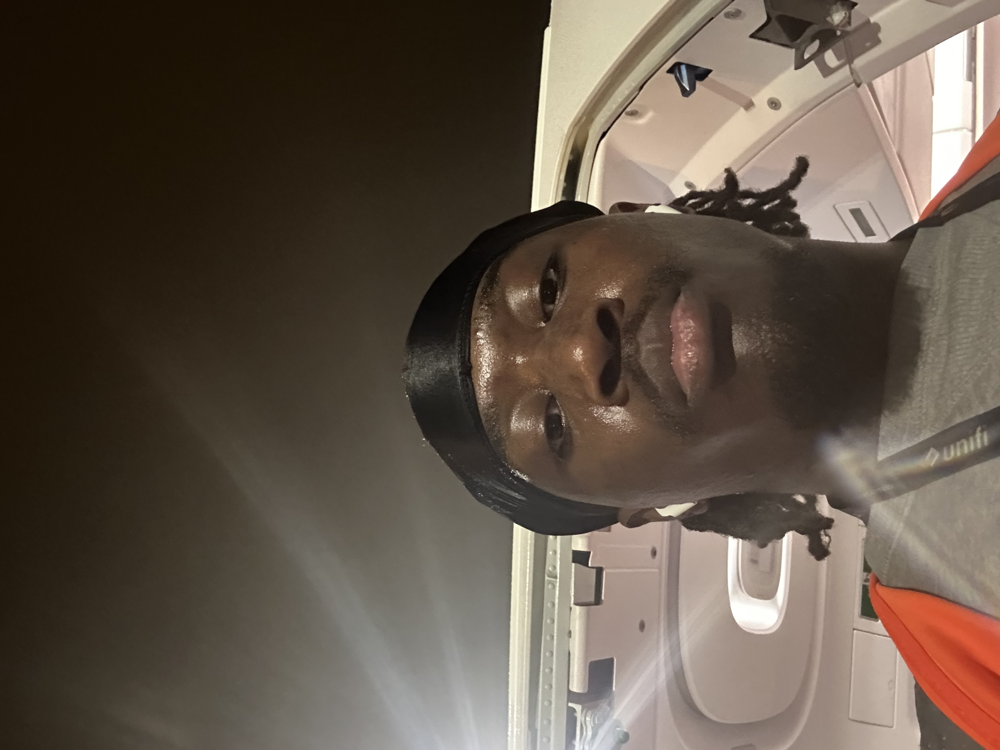

Hello, my name is Hendrick Sonfack, and I’m an aspiring Software Engineer with a passion for UX/UI development. I started developing my skills in this field in 2022, with a strong interest in both technology and design.
Currently, I’m pursuing a Computer Science degree at Birmingham City University, where I am constantly learning and growing in my field. I have gained experience in UX/UI design, focusing on creating intuitive and user-friendly interfaces that combine both functionality and visual appeal.
I am a problem-solver at heart, always looking for ways to merge art and technology. My journey in computer science has deepened my understanding of software engineering, but my true passion lies in UX/UI development, where I can bring both creativity and technical expertise together. As I continue my studies, I am excited to explore new opportunities and further develop my skills to make a meaningful impact in the tech industry.